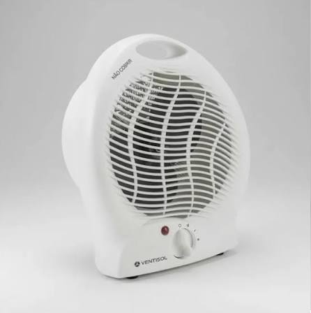

Brastemp WarmSensX O verdadeiro calor com a performance e o design que você confia. O Brastemp WarmSensX une a tradição de durabilidade da marca a um sistema de aquecimento cerâmico de alta precisão. Desenvolvido para entregar o máximo aconchego nos dias de frio rigoroso, seu acabamento em inox escovado e display Touch Control garantem um toque de sofisticação moderna para qualquer ambiente. Destaques do Produto Tecnologia Cerâmica PTC: Elementos de aquecimento em cerâmica que aquecem o ambiente de forma rápida, uniforme e segura, sem ressecar o ar. Sensor SmartTemp: Monitora a temperatura do cômodo em tempo real e regula a potência automaticamente para manter o clima sempre agradável, evitando oscilações térmicas. Função DryAir Comfort: Mantém a umidade relativa do ar em níveis saudáveis, prevenindo desconfortos respiratórios comuns em ambientes aquecidos. Abertura e Oscilação 120°: Distribuição tridimensional do ar quente que alcança cada canto da sala ou quarto com eficiência total. Filtro Lavável Purify: Retém poeira e ácaros do ar antes do aquecimento, garantindo um ambiente limpo e ideal para quem tem alergias.